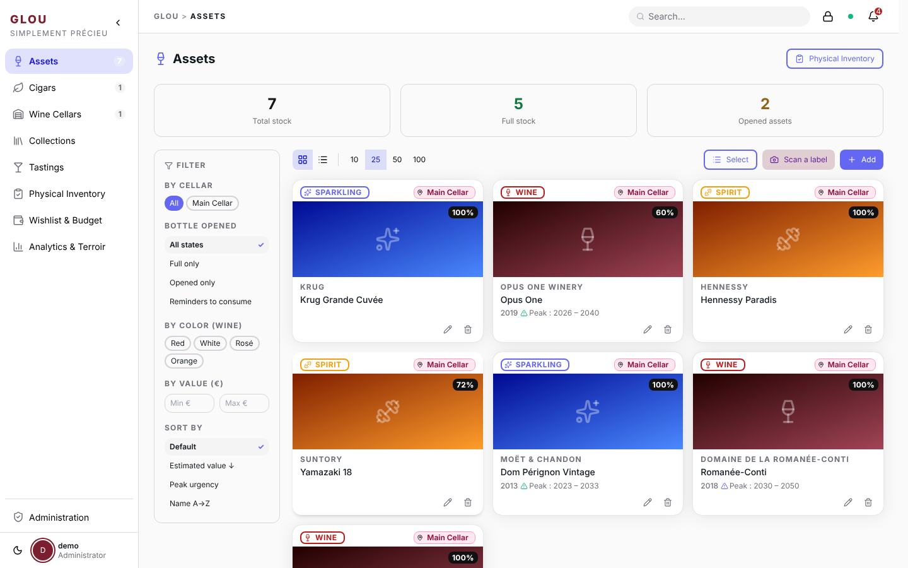
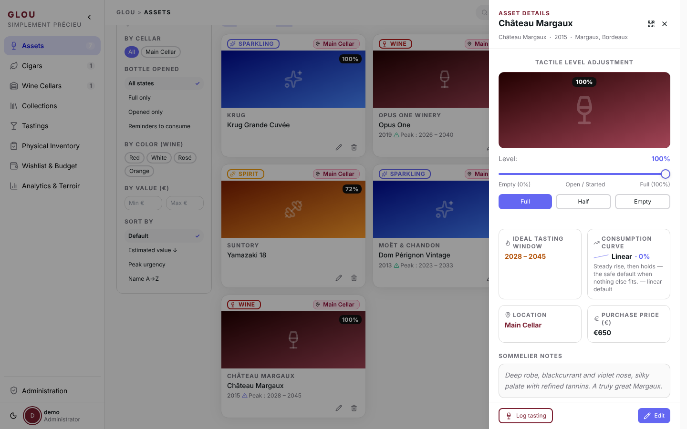
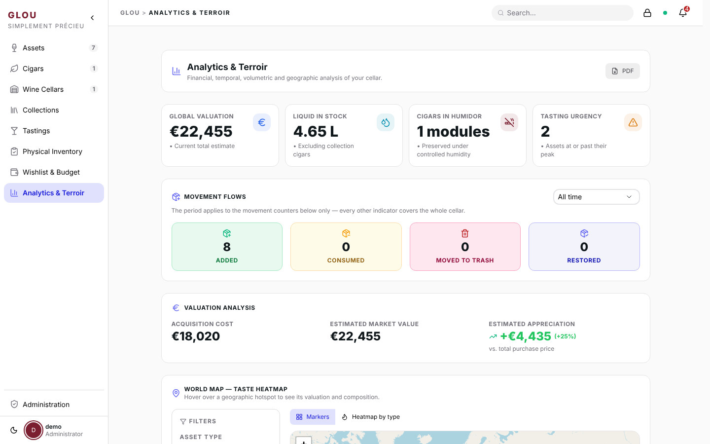

Glou is a self-hosted asset manager for luxury collections — wines, spirits, bubbles, and cigars. Visual recognition, expert data, and peak maturity indicators in one stack you fully own.
Snap a label photo. OCR pre-fills the details instantly.
Every user on the instance shares one collective cellar — built for families, roommates, and wine clubs.
Get notified when a bottle enters its drinking window before it's too late.
A Docker Compose stack (Node.js · Next.js · PostgreSQL) you run on your own machine.
Scoped, revocable links to let friends or family browse (or help stock) part of your cellar.



Copy the env file and set three mandatory values — none of them has a safe default.
cp .env.example .envDB_PASSWORD, JWT_SECRET (openssl rand -base64 48), and CONFIG_ENCRYPTION_KEY (openssl rand -hex 32). Running with placeholder values makes all user sessions trivially forgeable.Docker pulls the pre-built images and starts the stack. No compilation required.
docker compose up -ddocker compose --profile scan up -d.Open localhost:3000 and click Register. The first account created is automatically granted admin privileges.
docker compose pull && docker compose up -d